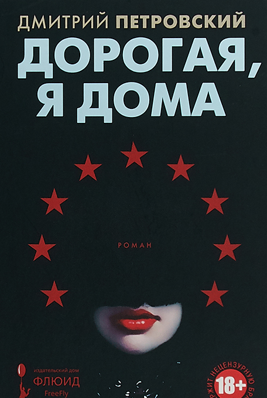

<!DOCTYPE html>
<html prefix="og: http://ogp.me/ns#">
  <head>
    <meta charset="utf-8"/>
    <meta name="viewport" content="width=device-width, initial-scale=1.0"/>
    <meta property="og:url" content="http://chernotrop.reviews/petrovsky-darling"/>
    <meta property="og:type" content="article"/>
    <meta property="og:title" content="Дорогая, я дома"/>
    <meta property="og:description" content="О романе евроскептика и русского националиста Дмитрия Петровского"/>
    <meta property="og:image" content="http://chernotrop.reviews/img/petrovsky-darling-og.jpg"/>
    <meta property="og:image:width" content="1200"/>
    <meta property="og:image:height" content="600"/>
    <link href="https://fonts.googleapis.com/icon?family=Material+Icons" rel="stylesheet"/>
    <link rel="stylesheet"/><!-- Yandex.Metrika counter --> <script type="text/javascript" > (function(m,e,t,r,i,k,a){m[i]=m[i]||function(){(m[i].a=m[i].a||[]).push(arguments)}; m[i].l=1*new Date();k=e.createElement(t),a=e.getElementsByTagName(t)[0],k.async=1,k.src=r,a.parentNode.insertBefore(k,a)}) (window, document, "script", "https://mc.yandex.ru/metrika/tag.js", "ym"); ym(56951962, "init", { clickmap:true, trackLinks:true, accurateTrackBounce:true, webvisor:true, trackHash:true }); </script> <noscript><div></div></noscript> <!-- /Yandex.Metrika counter -->
    <title>Дорогая, я дома</title>
  <link href="./css/style.bundle.css" rel="stylesheet"></head>
</html>
<body class="body_light">
  <header class="header header_dark">
    <div class="header__logo">
      <div class="logo logo_dark"><a class="logo__link" href="/">ЧЕРНОТРОП</a></div>
    </div>
    <nav class="header__menu"><a class="menu-item menu-item_active" href="index.html" target="blank">главная</a><a class="menu-item" href="features.html">рубрики</a><a class="menu-item" href="contacts.html">контакты</a><a class="menu-item" href="http://ttttt.me/blacktrope" target="blank">telegram-канал</a>
    </nav>
    <div class="header__menu_mobile" id="modeValue"><a href="menu.html">
        <svg xmlns="http://www.w3.org/2000/svg" width="24px" height="24px" viewBox="0 0 24 24">
          <path d="M0 0h24v24H0z" fill="none"></path>
          <path class="icon_white" d="M3 18h18v-2H3v2zm0-5h18v-2H3v2zm0-7v2h18V6H3z"></path>
        </svg></a>
    </div>
  </header>
  <article class="article">
    <div class="article__header">
      <h1 class="article__headline">Дорогая, я дома</h1>
      <p class="article__description">О романе евроскептика и русского националиста Дмитрия Петровского.</p>
    </div>
    <div class="article__content">
      <div class="article__content-row">
        <div class="article__content-left">
          <p>В марте в серии «Книжная полка Вадима Левенталя» издательского дома «Флюид» вышел роман журналиста Дмитрия Петровского «Дорогая, я дома». По словам критика и писателя Вадима Левенталя, в рамках серии он собирается выпускать «внежанровую интеллектуальную прозу». «Дорогая, я дома» ждал издание долгих пять лет — и с ходу попал в короткий список «Нацбеста».</p>
          <p>Действие романа развивается в современной Европе. Потомственный немецкий аристократ Людвиг Вебер, сколотивший состояние на гражданских авиаперевозках в пятидесятые, хранит секрет — в подвале дома он удерживает девушку-экскортницу Киру из Ижевска, которую похитил во время совместного уикэнда. В тесном и тёмном помещении Вебер выстраивает муляж образцовой семьи старой Европы вдали от мультикультурного мира: с классической музыкой, высокими манерами… и платьями с прорезью для цепи, длина которой не позволяет Кире дотянуться до выхода. Но сюжет не ограничивается отношениями Людвига и Киры: маньяка-миллиардера и его невольницу, игравшую в эскорт-агентстве роль «госпожи», окружают киллеры, героиновые наркоманы, жадные бизнесмены и прочие неоднозначные личности, про каждого из которых Петровский рассказывает достаточно подробно.</p>
        </div>
        <div class="article__content-right">
          <figure>
            <figcaption>Дмитрий Петровский «Дорогая, я дома». Издательство «Флюид ФриФлай», 2018. 384 с.</figcaption>
          </figure>
        </div>
      </div>
      <div class="article__content-row">
        <div class="article__content-left">
          <p>Выбор темы и места действия романа не удивляют. Дмитрий Петровский — консерватор и националист, автор «Спутника & Погрома» и Russia Today, житель Берлина и критик устоев современной Европы. Во взглядах автора и кроется основной смысл романа.</p>
          <p>Собирая истории воедино, замечаешь, что Петровский переводит подчинение и доминирование из политической плоскости в область сексуального. «Дорогая, я дома» перекликается и с работами философа Мишеля Фуко, искавшего корни эксплуатации в семье и пенитенциарных учреждениях, и с фрейдистскими теориями: тягу к доминации порождают детские травмы, а миллиардер Вебер лепит из Киры рано погибшую мать.</p>
          <p>Но Петровский говорит не только о сексуализации власти. Новым романом автор выносит Европе приговор: как старой за её высокомерие и закостенелость, так и новой, страдающей от миграции, финансового кризиса и лицемерия. Привычный для постмодерна набор персонажей изначально вызывает ухмылку, но Петровский невероятно правдоподобно вещает от лица совершенно непохожих героев. Автор меняет интонацию и динамику движения персонажей, точно определяет интересы, пороки и желания. Короткие истории расходятся по хронометражу и вновь встречаются в новой точке. В итоге роман звучит убедительно, не совершенно безнадёжно: никто не отыщет счастья в проклятой Европе. Богатые и бедные, добрые и злые, невинные и виноватые — на страдания обречены все. На вопрос «Что делать?» роман отвечать не хочет… и не отвечает, что пагубно сказывается на финале, который выглядит весьма очевидно.</p>
          <p>Не найдя в тексте обоснования для столь безальтернативного приговора или вариантов спасения, делаешь вывод: Петровский использует литературу как инструмент политической агитации.</p>
          <p>В той или иной мере любой писатель транслирует через произведения свои убеждения или взгляд на мир. У Петровского, при всех своих сценарных талантах, получилось топорно и очевидно.</p>
          <div class="article-author">⚒︎<br/><a href="http://soshnikov-writing.art/" target="blank"><span>Артём Сошников</span></a></div>
          <div class="article-year"><span>Петроград</span>, <span>2019</span>
          </div>
        </div>
      </div>
    </div>
  </article>
<script type="text/javascript" src="./js/bundle.js"></script></body>